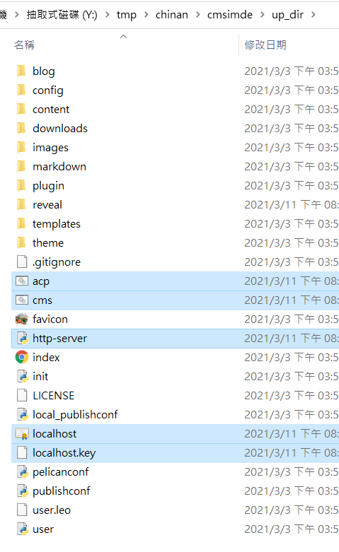
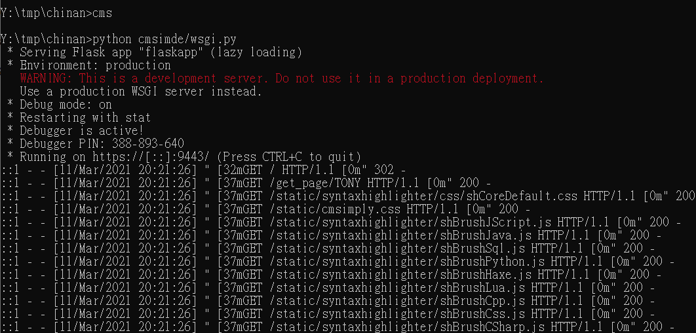
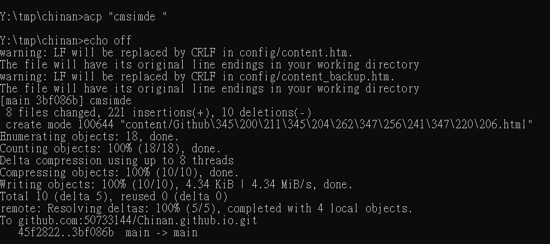

October 11 <<
Previous Github倉儲管理
我的倉儲：https://50733144.github.io/Chinan.github.io/
指令碼：
從遠端更新倉儲指令碼：
git fetch較近的分支，然後與本地端的分支做合併，產生一個合併提交節點，同步到自己的倉庫。
git pull將遠端的倉儲直接取代掉原先自己的倉儲。

接下來必須進入tmp /倉儲檔案/ cmsimde / up_dir以下檔案複製

到tmp /倉儲檔案下，貼上取代現有檔案，並能完成改版。
啟用動態網頁編輯碼：
原先啟用前，應進入cmsimde資料夾，然後打入python wsgi.py才可啟用動態編輯，
如今進入動態前剛剛，進入自己的資料夾，打入cms立即進入動態網頁進行編輯。

轉成早期靜態指令碼：
原先需進入自己的資料夾，打入git add，git commit，git push才可完成推送，
現在僅需打入acp“推送檔案名稱”即可完成推送。因為acp中包含了git a dd，git c ommit，git p ush，使用起來更方便。

October 11 <<
Previous